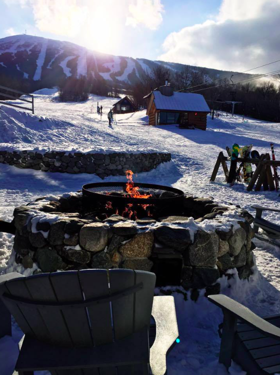

Homepage
Basic Facts About Me
My College Experience
My Favorite Place
My Favorite Place

My favorite place is Sugarloaf Mountain in Carrabassett Valley, Maine. I grew up ski racing,
and this was always my favorite place to go. When I go there, I feel as happy as I can be. I feel
like I am home. My favorite restaurant is located on the mountain, The Bag. One of my favorite
activities is going to get a bag burger after a long day of skiing.